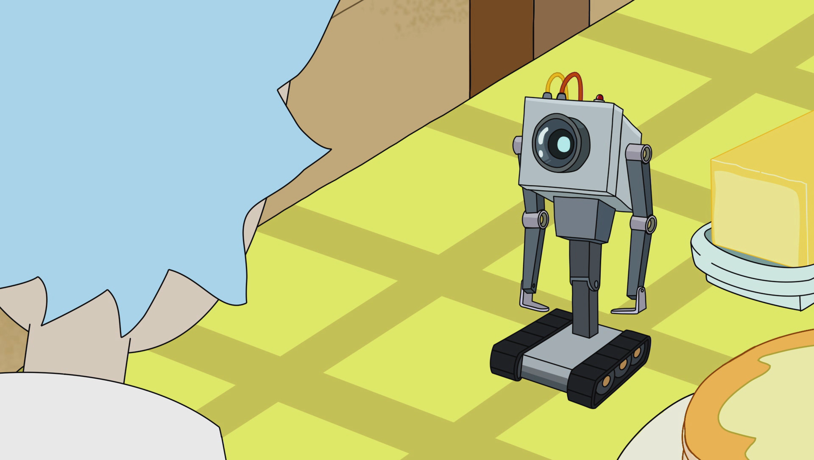

Arrays & functions
I can't drive 55!
I know I'm starting to sound like a broken record at this point, but I, again, want to impress upon you how fast we're going to be moving through this stuff. Last week we talked of variables, which is a pretty easy discussion to have at the outset of any programming course. Most people pick up on the 'empty box' analogy pretty quick. Data types, operators, concatenation, etc. these are all things found at the beginning of every programming curriculum everywhere. They are the natural place to start the student as they are an integral part of every other foundational programming concept. From variables, you can scaffold into more advanced constructs like arrays, functions, and conditionals, which provide the framework for moving into even more complex ideas like objects, iteration, recursion and more complex programming theory like encapsulation, inheritance, etc. However, as variables are--typically--so quick to pick up they'll fool you into believing it's all this easy.
My point is--and I'm making it poorly--is that over the next few weeks, we're going to be talking of things that normally take me an entire semester to cover in my programming-centric classes. It's that 'teach a man to fish' conundrum you find educators--whether they're teachers, mentors, parents, whatever--struggling with all over, right? Do we teach to 'do' or do we teach to 'understand?' Throw in the considerations of having so much material to cover and having to do it all over the course of a few hours a week for a few months and...well, you get the point. I tend to try to teach from a middle path, which means--for those of you reading this, anyway--that you're going to get a little bit of both. We're definitely going to 'do,' but we're also going to spend time 'understanding' so that when you go out in the world and try to 'do' more, you have some personal reference from which to pull.
Arrays
Personal pedagogy aside, let's move into arrays. It's not on our list, but we're scaffolding, remember?
Arrays are lists, or collections. They associate multiple values with one variable name. To create an array we use an array literal.
var haloGames =["Halo", "Halo 2", "Halo 3", "Halo 4", "Halo 5: Guardians", "Halo: ODST", "Halo: Reach", "Halo Wars", "Halo Wars 2"];
These are the Halo games I own--I like Halo...shut-up. To store these as separate variables would require me to...well, have separate variables using a similar naming scheme, each with a separate variable name and separate space reserved in system memory. Using an array, however, I can store all these values under one variable name 'haloGames' and the system store them all in one piece of system memory to help prevent fragmentation.
Since these variable values are all stored using the same variable name, I need some way to differentiate the values inside the array so that I can use them individually. As the array is created, each value added is 'indexed' and assigned a position number. To reference an individual value, or element, in the array I refer to it by that 'index' number. The important thing to remember here is that indexing starts at '0', so, the first element of the array is at index position 0 and not index position 1.
document.getElementById("list").innerHTML = haloGames[0];
This code, for instance, will replace the HTML in a >div< element with the "list" class attribute with the value found in the haloGames array at index position 0, which is..."Halo."
We can manipulate an array in all kinds of interesting ways. The syntax pattern is similar for most of the more common commands. You first refer to the array by name--in the example below, represented by 'x'--and then call the appropriate method using dot notation. If the method requires a value (e.g. adding to or subtracting items from an array, for instance), you would include them inside the parenthesis after the method call.
x.methodName(value, if needed);
Here is a list of some of the more common methods. A more complete list can be found at w3schools.
- x.pop() - removes the last value, or element in the array.
- x.push(value) - adds the value to the end of the array.
- x[index] = value - changes the value at the index position defined to the value provided.
- x.splice(index, index, value, value) - essentially creates a 'hole' in the array to insert additional values. The first index number indicates at what index position to make the insertion, the second index number indicates how many elements to remove, and the values afterwards indicate the values you want to 'splice' into the array.
Arrays are a handy little thing for quickly storing data and while you can totally pull that data out bit by bit using the methods outlined above, arrays are most useful in looping and iteration, which we'll talk about next time, so, stick around.
Functions
If variables are our nouns and arrays are our paragraphs--and they are, yeah?--then functions are our verbs. They are the mechanism through which we interact with our user. The things that happen when a user loads a page, or clicks a button, or mouses over something, etc. are the start of a dialogue between the developer and the end user. Functions are our end of the conversation.
As far as syntax goes, it looks a lot like a regular variable declaration because it kind of is.
var functionName = function(parameter) { code block with operation to perform; return result of operation; };
'var' is our keyword and 'functionName' is the name of our function. Like with any variable declaration this combination is simply instructing the interpreter to reserve space in memory and get ready to associate the following value with this specific variable name.
'function' is the keyword that starts our function expression. The parenthesis are used to reserve space for function parameters. If the function requires data in order to complete its operation, this is where you would define a variable name that the interpreter would associate with that data once it is 'passed.' Functions can have none, one, or multiple parameters depending on its purpose, or operation.
The curly brackets offset the code that is to be executed once the function is called, or 'invoked.' The 'return' keyword is used to return the results of that operation to the calling party. Just like a function doesn't necessarily need data to perform its function, you're not obligated to return any value if there is no value to return.
The function, once defined, will--metaphorically--sit and wait for someone to call it. It has a specific job as defined by its code that it will perform each and every time it is 'invoked,' regardless of where it's 'invoked' in the program in which it is defined.
To invoke the function we call it by name and pass to it any data that it might need to do its job.
functionName(value);
I am calling the function by its name and--if I need to--passing it the data it needs to do the required task. In this context, that value is called an argument as, in the real world, it would have an actual value. That value is copied and passed to the function for processing. The function takes the copied value and assigns it to the corresponding parameter, which it then uses to do whatever it is that it's supposed to do, yeah? By default the original value is left alone. Only the copied value is changed, or mutated. Once the function finishes execution any value created with the exception of any returned value is destroyed.
Functions are task-specific. They have a defined operation, or task, that they will perform upon request every single time they are called upon to do so. They have no other purpose than to perform the function for which they were designed. If I ask it do something outside the parameters of its programming, if I pass it bad values with which it cannot work, the function will not execute and the program will--most likely--crash and burn.

Let's look at some of the examples from last time.
HTML and CSS
<div id ="testArea">Testing...</div> <button onclick="alertBox()">Alert box</button> <button onclick="promptBox()">Prompt box</button> <button onclick="confirmBox()">Confirm box</button>
And the corresponding JavaScript.
function alertBox() { alert("Danger, Will Robinson. Danger!") }; function promptBox() { var name = prompt("Please enter your name: "); document.getElementById("testArea").innerHTML = "Hello, " + name + "!"; }; function confirmBox() { var confirmation; if (confirm("Are we cleared to proceed?") == true) { confirmation = "Confirmed. We are a go."; } else { confirmation = "That's a negative, good buddy."; } document.getElementById("testArea").innerHTML = confirmation; };
If you've been paying attention, you should've noticed that my syntax seems a bit...off, right? I've skipped the variable declaration in my corresponding code. I've skipped right to the 'function' keyword and ran with it from there, but why?
The truth of the matter is that there is no reason--at least, not at the level on which we are currently operating. It matters not if I assign an anonymous function to a named variable like in the generic example I first provided (a format referred to as a 'function expression') or if I reference the function by name directly like in the actual code provided directly above (a format referred to as a 'function declaration').
If the function had some larger purpose, if I intended to extend functionality to another function or process in the code, if I intended to store the result of the function executing for use later on, I would use the function expression method.
Let's say I created a 'take attendence' program for one of my classes. I take the student roster, slap it into an array, and then pass it to a function as an argument for processing. It works great for that one class, but what if I want to extend that functionality to include all my classes? What if the university hears of my fabulous 'take attendence' program and wants me to extend its scope to include all the classes across all disciplines on campus? The program has grown exponentially more complex, right? This single program now needs to 'take attendence' not just for a few of my classes, but nearly a hundred classes and keep those attendence records separate from one another. I now have 'containers' all over the place and while I could define and redefine that 'take attendence' function for each of those containers, it would make more sense to define it once, store the variable, and reference the function indirectly through the variable.
In each of the instances above, I'm not doing anything particularly complicated, I have no need to 'extend' the functionality of the function and use it elsewhere in a more complex operation. Once the function executes, I'm done with it and any variable inside it that was created. Consequently, I can 'shorthand' it and use the function declaration method. I reference the function directly by name, the function executes, the work is done, the changes made, and the function 'dies' along with any created variable inside the scope of the function.
JavaScript is weird. Its roots lie in the work of multiple developers across multiple disciplines across multiple backgrounds and companies. Standardization has been slow and weakly implemented. Programming structure--largely borrowed from other languages--has been forced upon it, which, in some cases, has completely broken it. Its rapid expansion and use in the modern age on the front end certainly hasn't helped any of it, exacerbating its deficiencies and highlighting its short comings.
As a result, there are a lot of weird things--like function expression vs function declaration--that you're going to have learn to work with provided this is the path you wish to walk.
- Here's a list of things.
- Here's another.
- And some more.
- Oh, look another list.
- Here's an article on 'hoisting.'
- And one more because I think you've got the point by now.
Scope
I've been using the word 'scope,' but what does that mean in the context of JavaScript, or programming, at large? Scope has a very specific definition within the context of programming. Scope refers to the area of influence or availability a particular variable, function, etc. has in the program.
I teach computer and technology related courses for the CIS department--generally--in a specific building on campus. Inside my classroom I have absolute influence and control--well, in theory, right? When I speak, students listen. I assign homework, students do it--again, in theory. Inside the context of my classroom, I have scope. If you need to find me, chances are I'm in my building as that is where my classrooms and office are located. My availability isn't limited to that building, but when I'm on campus, that's, typically, where you'd find me or my origin point.
If I go across campus and try to exercise the same scope in--let's say--a composition class, they'll laugh me out of the room. I can stand up there and lecture, I can assign homework, I can do all the things I do in my classroom during class, but because I am outside the scope of my position, I might as well be screaming into the wind. Likewise, if you're trying to find me and the only place you're looking is inside the health sciences building, you're probably going to have a difficult time. I'm hardly ever in that particular building, so, the chances of you finding me there by only looking there are pretty slim.
It works much the same in programming. Variables have scope. They have reach and specific visibility depending on their location in the code. As example:
var myCar = "Ford Fiesta"; var nameMyCar = function() { document.write(myCar) }
'myCar' is a global variable. It has been declared outside the confines of any specific programming construct. I can use, or access, this variable from anywhere inside the program's code in any programming construct I create because it has global reach and availability. When the function executes it can access that variable 'myCar' because that variable has global scope.
var nameMyCar = function () { var myCar = "Chevy Malibu"; document.write(myCar); } nameMyCar();
This is a local variable. It has been declared inside the confines of a specific programming construct (i.e. a function). I can only use, or access, this variable within the confines of that defined function. I cannot access that particular variable with any other programming construct in the program. I can pass or return that variable value, but that's only the value. That specific instance of a variable name only exists in memory for as long as the function is executing. It doesn not exist until the function executes and once the function is done performing its defined task, the variable is destroyed. It is a local variable, it has local scope.
So, why is this a big deal? Well, what happens when we combine the two?
var myCar = "Ford Fiesta"; var nameMyCar = function() { var myCar = "Chevy Malibu"; return myCar; } document.write(myCar); document.write(nameMyCar());
I'm going to get two different and distinct outputs. The first output statement will reference the global variable named myCar and output "Ford Fiesta." The second output statement invokes the function "nameMyCar," which sets a local variable value and then returns that variable value to the output statement, outputting "Chevy Malibu."
Again, if you've been paying attention, you may have noticed that when that function executes there are, in fact, two variables 'alive' in the program with the name myCar. The variable does not have two values, but rather they are two distinct and separate 'instances' of that variable that just happen to have the same name. When the function executes, a variable instance named myCar is created within the local scope and its value is returned to the invoking code. Once the function finishes execution, it and all associated variables are destroyed.
I have an analogy, but I warn you it's a very, very stupid one.
You are in a room with a guy named Carl in it. Carl is from corporate and incredibly territorial (not that these two things are related). He absolutely cannot be in the same room with any other men (or women, let's not be sexist) named Carl. However, 'corporate Carl' needs some numbers and the only guy who has them is from accounting and he happens to be named 'Carl.' You know that if 'accounting Carl' and 'corporate Carl' are in the same room, bad things are going to happen and only one will be left standing--probably 'corporate Carl' because he's super aggressive and seems to have some sociopathic tendencies. You really need those numbers from 'accounting Carl,' however, to look good for 'corporate Carl,' so, you come up with a plan.
You use a bunch of room dividers to temporarly create a room within the room and usher 'accounting Carl' into your ad-hoc oasis to hear him out. The two men are--effectively--in the same room and no one is trying to kill anyone. The two men can't see one another and they're not directly interacting with each other. Once you have the numbers, 'accounting Carl' is sent back to oblivion (a.k.a. the accounting department), the makeshift room is dismantled, and you take the data back to 'corporate Carl' who seems pleased.
I told you it was stupid.
Traversing the DOM
According to the latest standards everything inside the HTML document is a 'node.'
- The entire document is a document node
- Every HTML element is an element node
- The text inside HTML elements are text nodes
- All comments are comment nodes
The nodes in the DOM have a hierarchical relationship not unlike that which you might find in your family.
- The top most node is called the 'root,' or 'root node.'
- Every node has exactly one 'parent' except the root node.
- A parent node can have multiple children.
- Nodes that share the same parent are considered 'siblings.'

You can 'traverse the DOM,' or navigate the node tree by using node properties.
- parentNode
- childNodes[nodenumber]
- firstChild
- secondChild
- nextSibling
- previousSibling
<div id="example">I see a little silhouetto of a man.</div>
The text inside the <div> element is self-contained in a text node that has to be accessed separately.
We can do this a few different ways.
var lyric = document.getElementById("example").innerHTML;
Here I'm accessing it directly using the node's innerHTML property.
var lyric = document.getElementById("example").firstChild.nodeValue;
Here I'm accessing it via the nodevalue of the named element's first child.
var lyric = document.getElementById("example").childNodes[0].nodeValue;
And here I'm accessing it via the named element's first child's nodenumber.
JavaScript is kind of janky and, so, it makes sense--in a weird way--that you'd have 87 different ways to do--what is--essentially--the same thing. While there might be instances where one method is preferred over the other, your use is, largely, a matter of personal preference. I like to refer directly to things by name, or id. That makes more sense to me than referring to something's child or sibling, even if it is the more 'object-oriented' way of doing it. You might prefer it the other way. Provided the end result is the same, you do you and do it how you like to do it.
Built-in methods
JavaScript has a bunch of pre-defined functions, or methods, for you to use, if you like. We've talked about a few in the context of arrays, but JavaScript has a wide catalog of built-in methods that can do all kinds of useful things. We're going to focus on some math stuff in a minute, but before we get there, here's a list of some of the more common and useful ones.
- Number() - converts an object value to a number.
- String() - converts an object value to a string.
- parseFloat() - parses the string and returns a float (or decimal) value.
- parseInt() - parses the string and returns an integer value.
- trim() - removes whitespace at the end of a string value.
- toLowerCase() - converts a string to all lowercase.
- toUpperCase() - converts a string to--you guessed it--all uppercase.
- getDate() - returns the date (1-31)
- getDay() - returns the current day of the week (0-6)
You can also nest, or daisy chain these methods as you see fit for your particular use.
And the code.
function randomNumber() { document.getElementById("randomValue").innerHTML = Math.floor(Math.random()*20)+1; }
The best way to approach this is to look at it from the inside out. The 'math.random()' will return a psuedo-random, floating-point number with a value between 0 (inclusive) and 1 (exclusive). I need a number between 1 and 20, so, I'm going to multiply that value by 20 to scale it.
The math.floor() will take that value and round it down to the nearest whole number. This effectively gets rid of the decimal, but brings with it another problem.
There is the possibility that my number will round down to '0,' which is no good. Additionally, because 20 is exclusive from the set, there is no way to actually roll a '20,' which is also no good. To solve both of these problems, I add '1' to the overall value. Even if the number rounds down to 0, I never see that value because 1 is automatically added to every number value generated. Extensibly, when 19 is generated, 1 is automatically added to it bringing the number result to 20. Now I can 'randomly' generate numbers in the range of 1-20 with the click of a button. I take that value and ship it out to the element with an id of "randomValue" and we're done.
Objects
The culmination of our work this week is a very brief discussion on objects.
Objects are simply data structures consisting of a related collection of variables (a.k.a. properties) and functions (a.k.a. methods) often representing the abstraction of real world things.
A student, for example, can be an object. The student object is an abstraction of a real human being, right? In the context of 'student' there are some characteristics and actions that we just don't care about. In your student record, for instance, we don't care what kind of shoes you wear or even if you wear shoes. We don't care what you do in your spare time. We don't care if you really enjoy hiking. These things are certainly properties and methods that you have as...you, but they're not pertinent to you as a student. So, a student object would have variables related to properties that are pertinent to you as a student like name, age, address, phone number, sex, etc. and the student would have methods pertaining to what a student can 'do' like register for classes, pay their bill, use a book voucher, etc. The student object encompasses all the relevant characteristics of what a student is and all the different ways that the student object can interact or be interacted with.
In JavaScript--and most programming languages I'm familiar with, truth be told--everything is an object. Up above I mentioned the toUpperCase(), which takes a string and converts to all uppercase letters. A string, if you remember, is a primitive data type, and only has the single value, so, how does that work? When working with the string, JavaScript will actually wrap it in a generic 'object wrapper,' effectively granting it a whole host of other properties and making certain methods available to it like toUpperCase(). Again, JavaScript does this with just about everything (e.g. strings, numbers, arrays, functions, etc.) and, consequently, almost everything is an object including the aforementioned student Object (big O). In the case of the student Object I am explicitly defining the properties and methods available to it whereas with the object wrapper those properties and methods are defined for me.
There are several ways to define objects.
- Define and create a single object using an object literal.
var student = { firstName: "John", lastName : "Smith", id : 556645, fullName : function() { return this.firstName + " " + this.lastName; } };
Here I'm defining a single student object using these specific values and featuring this specific method. If I want to access a value in this object, I have to use dot notation, referring to the object name and then the property or function I want to execute.
student.fullName();
function student(first, last, id) { this.firstName = first; this.lastName = last; this.id = id; fullName : function() { return this.firstName + " " + this.lastName; } }; var student1 = new student("John", "Smith", 556645); var student2 = new student("Jane", "Doe", 456987);
Here I am defining a generic blueprint (e.g. class or prototype) for my student object. I then create two new students (student1 and student2) using the student class, or prototype. I pass to the object constructor my values and it spins off two separate object instances. If I want to access a value in eac object, I have to use dot notation, referring to the specific object name and then the property or function I want to execute.
student1.fullName();
student2.fullName();
"this"
We're almost done, I swear, but I need to make special mention of the 'this' keyword you might have noticed in some of the code.
It can get terribly complicated--to the point where I don't understand the full force and effect of the 'this' keyword and I've been doing this for years--but, generally speaking, the 'this' keyword typically refers to the most immediate instance in which it is found. In the case of our object constructor, I am taking those passed data values and assigning them to internal, or local variables, some of which I use in the defined function. 'This' in this case refers to the object name itself.
var student1 = new student("John", "Smith", 556645);
When I create the variable student1, I automatically pass that variable name to the object constructor, so, that when it creates my object, it creates it with the variable name of student1, right? This is why I can create multiple objects using the same object class, or prototype, without having them overwrite each other. They each have different names depending on the variable value passed.
'this' then refers not to the object class name of 'student,' but rather to that passed variable name of 'student1' or 'student2' or 'studentWhatever.' I have to genericize (if that's even a word) the class so that I can use it for creating multiple objects and to prevent variables from being overwritten. I use the 'this' keyword--in this context--to tell the interpreter to create a local variable using the moniker student1 (or whatever value passed) for use inside the specific object when it's created.